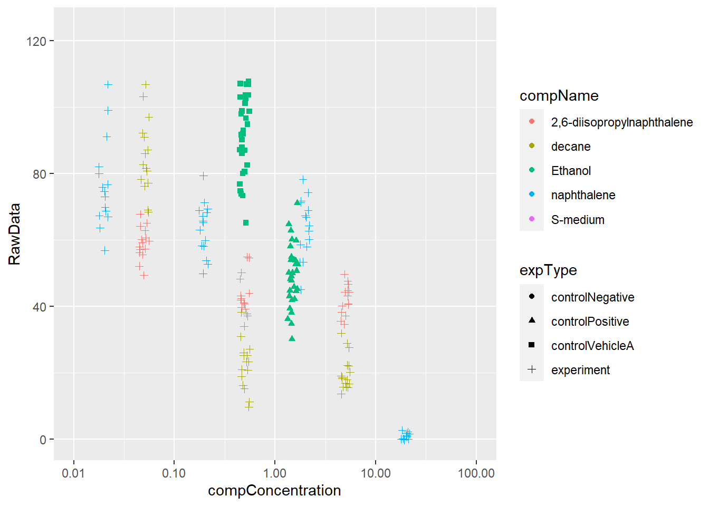

2 Data analyse voorbeeld
The data for this exercise was kindly supplied by J. Louter (INT/ILC) and was derived from an experiment in which adult C.elegans nematodes were exposed to varying concentrations of different compounds. The variables RawData (the outcome - number of offspring counted as an integer value, after incubation time), compName (the generic name of the compound/chemical), the compConcentration (the concentration of the compound), and the expType are the most important variables in this dataset.
A typical analysis with this data would be to run a dose-response analysis using a log-logistic model with estimates for the maximal, the minimal, the IC50 concentration and the slope at IC50. We will not go into the details but a good package to run such computations and create graphs in R is the {drc} package. See: and:. In the exercise below we will create some visualizations using {ggplot2}.
2.1 a)
Review the following Excel file in the ./data/CE.LIQ.FLOW.062_Tidydata.xlsx (it’s here), by opening the file in Excel. See if you can spot anything peculiar about this file. Do not edit the file in any way. Just close it when you are done. (Annoyingly, Excel asks you to save your changes, even if you did not touch anything in the file.)
2.3 c)
Inspect the data types of columns RawData, compName and compConcentration. What types would you expect from the experimental description above. Have the data types been correctly assigned during the importing of the data into R?
2.4 d)
Create a graph displaying a scatterplot for the CE.LIQ.FLOW.062_Tidydata.xlsx data, for the different compounds and the varying concentrations. Put the compConcentration on the x-axis, the DataRaw counts on the y-axis and assign a colour to each level in compName. Assign a different symbol (shape =) to each level in the expType variable. Try fixing the labels of the x-axis so that we can read them
2.5 e)
When creating the plot under d), what happened with the ordering of the x-axis labels. Explain why this happens. Look at the data-type of the compConcentration column in the data again to find a clue.
2.6 f)
Correct this and than look at the graph again. Use a log10 transformation on the x-axis to get a clear graph. Also, add a bit of jitter to the points in the graph so that points are not overlapping.
2.6.1 Answer
# check the unique values in column compConcentration and see that some of the values are in scientific notation which causes the values to be read as character instead of numeric
unique(data$compConcentration)## [1] "4.99" "0.499" "4.99E-2" "4.9899999999999996E-3" "4.9899999999999999E-4" "4.99E-5" "19.5"
## [8] "1.95" "0.19500000000000001" "1.95E-2" "1.9499999999999999E-3" "1.95E-4" "0,000195" "1.5"
## [15] "0" "0.5"# change the scientifically notated values in numeric values
data["compConcentration"][data["compConcentration"] == "1.95E-2"] <- "0.0195"
data["compConcentration"][data["compConcentration"] == "4.9899999999999996E-3"] <- "0.0049899999999999996"
data["compConcentration"][data["compConcentration"] == "4.9899999999999999E-4"] <- "0.00049899999999999999"
data["compConcentration"][data["compConcentration"] == "1.9499999999999999E-3"] <- "0.0019499999999999999"
data["compConcentration"][data["compConcentration"] == "4.99E-2"] <- "0.0499"
data["compConcentration"][data["compConcentration"] == "4.99E-5"] <- "0.0000499"
data["compConcentration"][data["compConcentration"] == "1.95E-4"] <- "0.000195"
# change global options to not have scientific notation in as.numeric function
options(scipen=999)
# once again check the unique values; they can now be changed into numeric values
unique(data$compConcentration)## [1] "4.99" "0.499" "0.0499" "0.0049899999999999996" "0.00049899999999999999" "0.0000499"
## [7] "19.5" "1.95" "0.19500000000000001" "0.0195" "0.0019499999999999999" "0.000195"
## [13] "0,000195" "1.5" "0" "0.5"data$compConcentration <- as.numeric(data$compConcentration)
# change column "compName" and "expType" into a factor
data$compName <- as.factor(data$compName)
data$expType <- as.factor(data$expType)
# create scatterplot graph with a bit of jitter so points do not overlap
data %>%
ggplot(aes(x= compConcentration, y= RawData, color= compName, shape= expType)) +
geom_jitter(position = position_jitter(0.05)) +
scale_x_log10(limits=c(0.01,100))
2.7 g) & h)
Fill in: (g) The positive control for this experiments is Ethanol. (h) The negative control for this experiment is S-medium
2.8 i)
Think about how you would analyze this experiment to learn whether there is indeed an effect of different concentrations on offspring count and whether the different compounds have a different curve (IC50). Write down your analysis as a step-wise plan.
2.9 j)
Normalize the data for the controlNegative in such a way that the mean value for controlNegative is exactly equal to 1 and that all other values are expressed as a fraction thereof. Rerun your graphs with the normalized data.
2.9.1 Answer
# get mean of controlNegative in column expType
norm <- data %>% group_by(expType) %>% summarise_at(vars(RawData), list(name=mean))
# create new column with normalized data
norm_data <- data %>% mutate(norm_RawData= RawData / as.numeric(norm[1,2]))
# create normalized scatterplot
norm_data %>%
ggplot(aes(x= compConcentration, y= norm_RawData, color= compName, shape= expType)) +
geom_jitter(position = position_jitter(0.05)) +
scale_x_log10(limits=c(0.01,100))